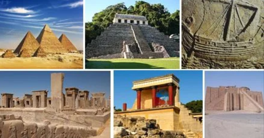

¿Por qué es importante la historia?
La historia es la ciencia que estudia los hechos del pasado. Nos ayuda a entender cómo vivían las personas antiguamente, qué inventaron, cómo se organizaban y qué cosas pasaron para llegar a ser lo que somos hoy.
️ Civilizaciones
Existieron pueblos increíbles como los Egipcios, Griegos, Romanos y Mayas, que construyeron grandes ciudades y templos, y nos dejaron enseñanzas que todavía usamos.
Cambios
A lo largo del tiempo hubo descubrimientos, guerras y viajes que cambiaron el rumbo de todo el planeta, uniendo continentes y mezclando culturas.
Aprender historia no es solo memorizar fechas, es entender que todo lo que tenemos hoy es gracias a lo que hicieron nuestros antepasados.